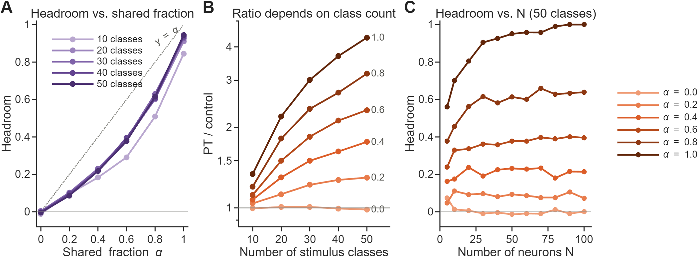
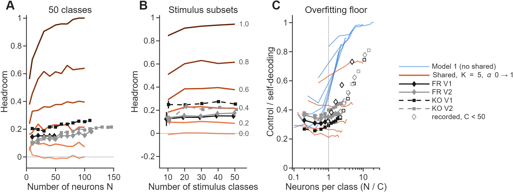

PT was benchmarked on three models that differ only in how the renderings relate. All three share the neurons, their single-neuron statistics, the trial noise and the decoding pipeline.
Notation: \(\mu_{s,c} \in \mathbb{R}^N\) is the population's mean response to stimulus \(s\) in rendering \(c\). \(r \in \mathbb{R}^N\) holds each neuron's mean spike count and \(D = \operatorname{diag}(r_i \kappa_i)\) its tuning depth, both drawn from the recorded distributions. Trials are Poisson around \(\mu_{s,c}\), 10 per stimulus.
Model 1: independent representations
\[\mu_{s,c} = r + D\,\varepsilon_{s,c}, \qquad \varepsilon_{s,c} \text{ independent across } s \text{ and } c, \qquad \mathbb{E}\,\varepsilon = 0, \ \operatorname{Var}\varepsilon = 1\]
Nothing is shared across renderings. The \(\varepsilon\) are standardized Gamma draws, so rates stay positive. This is the high-dimensional null: PR ≈ 30 at 100 neurons and 50 classes.
Model 2: shared structure in rendering-specific coordinates
\[\mu_{s,c} = r + D\,U_c\, z_s, \qquad z_s \in \mathbb{R}^{K}, \quad U_c \in \mathbb{R}^{N \times K}, \quad K = 5\]
\(z_s\) are the stimulus's shape coordinates: the same in every rendering, and whitened across stimuli. \(U_c\) is the rendering's coordinate frame, with unit-norm rows drawn independently per rendering. With \(N \gg K\), \(U_c^{\top}U_c \approx (N/K)\, I\), so \(U_c\) acts as a random orthonormal frame up to scale: the role of \(R_c\) in an orthogonal formulation.
\(x_s\): shape coordinates shared by every rendering; \(U_c^{\mathrm{sh}}\) embeds them in rendering \(c\).
\(U_c^{\mathrm{sp}}\): a rendering-specific subspace common to all stimuli in that rendering (the role of \(A_c\)). \(y_{s,c}\): each stimulus's position in it, drawn independently per rendering (the role of \(u_{i,c}\)).
Weighting: every latent coordinate has unit variance, so the shared term carries a fraction \(\alpha\) of each rendering's signal variance (the role of \(\sqrt{\alpha}\)). The total dimensionality stays \(K\) at every \(\alpha\).
Endpoints: \(\alpha = 1\) is Model 2. \(\alpha = 0\) is an independent-representation null at Model 2's dimensionality (PR 7–8), complementing Model 1's high-dimensional null.
The weighted form changes each rendering's PR with \(\alpha\) (5 → 10 → 5 for 5 + 5 dimensions), and the floor depends on PR
Three renderings (EC, AC, EX)
Two renderings per population, both ordered pairs
The recordings are compared pair by pair on the same metric; an EX-specific latent was not run
Implementation
The three models share their neurons, latent draws and trial noise. Per neuron \(i\), stimulus \(s\), rendering \(c\) and trial \(t\), Model 3 (Model 2 at \(\alpha = 1\)) is generated as:
\(r_i, \kappa_i\): the neuron's mean spike count and tuning depth (SD over mean of its tuning curve), drawn from the recorded distributions in the 330–630 ms window. They belong to the neuron, so they are the same in every rendering. The recorded Fano factor (1.08) motivates Poisson trials.
\(x_s\): the stimulus's shape coordinates, identical in every rendering. \(y_{s,c}\): its appearance coordinates, drawn independently for each rendering.
whiten: zero mean and identity covariance across stimuli within each rendering. Cholesky whitening leaves the shape coordinates identical across renderings and makes the appearance coordinates orthogonal to them.
\(u_{i,c}\): neuron \(i\)'s readout direction in rendering \(c\), a random unit vector drawn independently per rendering. The renderings thus embed the same shape coordinates differently, which Procrustes can largely undo.
\(\kappa_i\) cap: at 0.35 and at the largest value that keeps neuron \(i\)'s rates non-negative, so no offset or rectification is needed.
Because \(z\) is white and \(u\) has unit length, neuron \(i\)'s tuning SD is exactly \(r_i \kappa_i\) in every rendering and at every \(\alpha\). Self-decoding and PR therefore do not change with \(\alpha\): at most 0.039 and 0.17 across \(\alpha\) over the 55 grid points, against a population SEM of 0.014 for self-decoding. \(\alpha = 1\) reproduces Model 2 exactly (the 5-D “Model 3” of the earlier write-up), and \(\alpha = 0\) is a null at the recorded dimensionality (PR 7–8 at 50 classes).
Model 1 uses the same \(r_i\) and \(\kappa_i\), with every rate an independent Gamma draw, \(\lambda_{i,s,c} \sim \operatorname{Gamma}(1/\kappa_i^2,\; r_i \kappa_i^2)\): mean \(r_i\) and SD \(r_i \kappa_i\).
Decoding and metric
Each ordered pair of renderings (source → target) is decoded exactly as the recordings are:
Z-score each rendering per neuron over all of its trials.
Self-decoding: an ECOC linear SVM trained on the target rendering, scored by 10-fold cross-validation.
PT: hold out one source trial per stimulus and average the other 9. Fit the orthogonal map \(T\) from the source means to the target means, map the held-out trials by \(T\), and decode them with the target SVM.
Control: apply one random permutation of the stimuli to both the source means and the held-out trials, then fit, map and decode the same way. It keeps the rotation's freedom but destroys the stimulus correspondence.
Average 10 holdouts and both ordered pairs. Each grid point has 16 populations (\(N\) = 5–100 neurons, 10–50 classes, 6 values of \(\alpha\)).
\[\hat T = \arg\min_{T^{\top} T = I} \big\lVert \bar M_{\mathrm{src}}\, T - \bar M_{\mathrm{tgt}} \big\rVert_F\]
\(\bar M\) is the stimulus × neuron matrix of class means, centred across stimuli. MATLAB's procrustes also fits a scale and a translation, but only \(T\) is applied.
Headroom is the share of the gap between the shuffled floor and self-decoding that PT recovers: 0 when nothing is shared, 1 for full transfer. Unlike PT/control, it corrects for both the floor and the ceiling.
Calibration: headroom reads out \(\alpha\)
Headroom tracks \(\alpha\) and hardly depends on the number of neurons or classes. PT/control at a fixed \(\alpha\) grows with the class count, so it cannot be compared across class counts.

Figure 1. (A) Headroom vs. \(\alpha\), one line per class count (mean over \(N \ge 20\)). (B) PT/control vs. class count, one line per \(\alpha\). (C) Headroom vs. \(N\) at 50 classes, one line per \(\alpha\).
\(\alpha = 0\) is a clean null. Over \(N \ge 20\), PT/control has a median of 1.00 (0.90–1.07) and headroom stays between −0.07 and 0.05. Scored against the permuted identities, the control stays within 0.03 of chance.
Headroom is stable across class counts. At 50 classes it is 0.09, 0.22, 0.38, 0.62 and 0.94 for \(\alpha\) = 0.2 to 1, and it stays within 0.03 of these values at 20–40 classes. Only 10 classes falls lower at large \(\alpha\) (0.84 at \(\alpha = 1\)).
Headroom is stable across \(N\). From 20 neurons on it barely moves; at 50 classes and \(\alpha = 0.4\) it ranges 0.18–0.24 over \(N\) = 20–100.
PT/control is not. At \(\alpha = 0.4\) it rises from 1.07 at 10 classes to 1.77 at 50; at \(\alpha = 1\), from 1.34 to 4.33.
Headroom is convex in \(\alpha\): sharing 40% of the latent dimensions recovers only about a fifth of the gap between floor and self-decoding.
Recorded populations at 50 classes
The recorded headroom is 0.15–0.25. Within this family that places the four populations at \(\alpha \approx\) 0.30–0.45: well above the \(\alpha = 0\) null, and far below full sharing.
Population
Neurons
Self
PT
Control
PT/control
Headroom
Implied \(\alpha\)
FR V1
48
0.262
0.111
0.084
1.32
0.15
0.30
FR V2
112
0.338
0.167
0.131
1.28
0.18
0.34
KO V1
109
0.496
0.255
0.174
1.47
0.25
0.45
KO V2
146
0.370
0.214
0.173
1.24
0.21
0.38
Accuracies are from the same decoder and control as the models (8 repeats, all neurons, all 6 rendering pairs) and agree with the earlier neuron-subsampling analysis to within 0.005 in accuracy and 0.01 in headroom. Implied \(\alpha\) is interpolated on the model's 50-class headroom curve (Figure 1A).
Operating point matches. The family at \(N\) = 40–100 has self-decoding 0.28–0.41 and PR 7.1–7.8; the recordings have 0.26–0.50 and 7.0–9.5.
Headroom is flat in \(N\), as the family predicts. Subsampling neurons from 20 up to full size (Figure 2A), headroom stays at 0.15 (FR V1), 0.12–0.19 (FR V2), 0.19–0.26 (KO V1) and 0.11–0.22 (KO V2).
Recorded populations on fewer classes
On random subsets of 20–50 stimuli, each population's headroom stays in its own \(\alpha\) band, as the family predicts. Over the same range PT/control falls with the class count. The \(\alpha\) read at 50 classes therefore carries over to fewer classes, which tests the family on data it was not read from.

Figure 2. (A) Headroom vs. \(N\) at 50 classes: the family (orange, \(\alpha = 0\) light to 1 dark) and the recorded populations (neuron subsampling). (B) Recorded headroom vs. number of classes (16 random stimulus subsets per class count, all neurons; error bars = SEM over subsets) over each \(\alpha\)'s model headroom. (C) Floor (control / self) vs. neurons per class: Model 1, the family (one line per class count) and the recordings (filled: 50 classes; open: stimulus subsets).
Headroom is flat from 20 to 50 classes. With all neurons it is 0.14–0.15 (FR V1), 0.15–0.18 (FR V2), 0.25–0.28 (KO V1) and 0.21–0.23 (KO V2).
PT/control is not. From 50 to 20 classes it falls from 1.47 to 1.18 in KO V1 and from 1.32 to 1.10 in FR V1.
Same with \(N/C\) held at the recorded ratio. Headroom at 20–50 classes is 0.11–0.17, 0.13–0.18, 0.21–0.27 and 0.17–0.22 in the same order.
10 classes is too noisy to read. Subset SEMs are 0.03–0.14, KO V2 drops to 0.11 with all neurons, and with all neurons the floor sits at 0.73–0.81 of self-decoding.
Floor mismatch and limits
The family matches the recordings' self-decoding, PR and headroom, but not their floor. The implied \(\alpha\) is therefore a calibrated reading within this family, not a measured fraction of shared structure.
The recorded floor is higher. At 50 classes and full size, control/self is 0.32–0.47 in the recordings and 0.20–0.24 in the family at matched self-decoding and PR, at every \(\alpha\).
It rises with \(N\), as Model 1's does. From 20 neurons to full size it goes from 0.26 to 0.35 in KO V1 and from 0.36 to 0.46 in KO V2. Model 1's goes from 0.42 to 0.80 over \(N\) = 40–100, while the family's stays flat.
The metric matters. PT/control does not correct for the floor; read through it, the recordings would imply only \(\alpha \approx\) 0.16–0.27, against 0.30–0.45 from headroom.
What the simulations support: at the recorded dimensionality the recordings are inconsistent with \(\alpha = 0\) and consistent with partial sharing. The exact \(\alpha\) depends on the family's assumptions (linear readout, 5 equal-variance latent dimensions, independent readouts per rendering). A latent with a decaying spectrum might reproduce the higher floor; it has not been run.